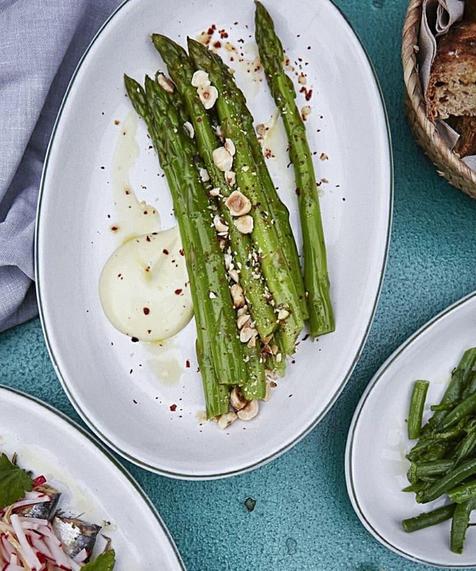
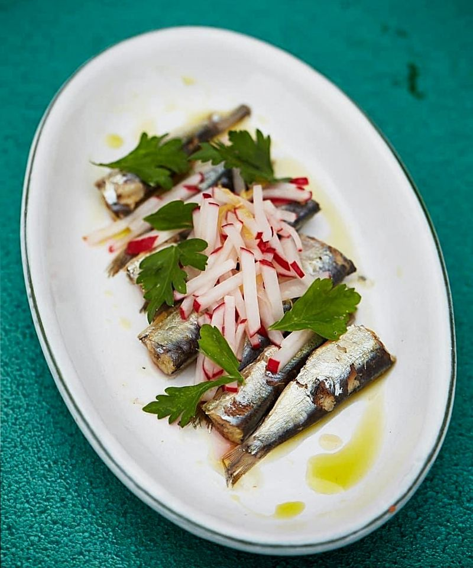
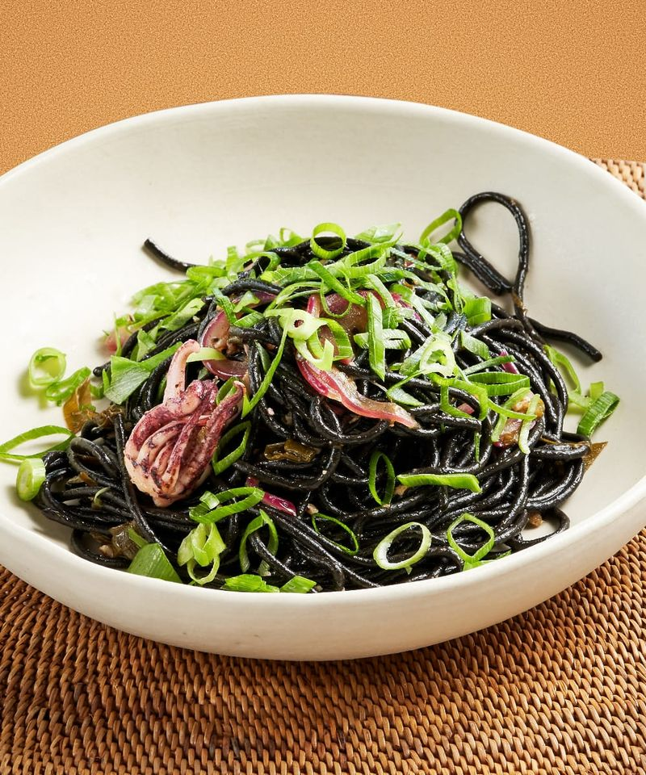

What I do
- Restaurant openingsConcept + setup + execution
- Menus and conceptsSeasonal + local + global
- Kitchen coordinationBrigade + flow + culture
- Extraordinary eventsFood + music + atmosphere
Chef + executive chef
Restaurant operator
Culinary consultant
Food culture, people, and good energy

What I do

Chapter 01 / point of view
Tiago works where food, team rhythm, and room energy meet. The plate matters. So does the pass, the sourcing, the timing, the music, and the feeling when the night suddenly has a pulse.
Chapter 02 / work
Concept, menu direction, kitchen setup, workflow, sourcing, and launch rhythm.
Food ideas shaped until they can be cooked, explained, repeated, and remembered.
Brigade culture, prep logic, calm execution, and the tiny systems behind a good room.
Food-led moments with atmosphere, timing, music, and enough weirdness to stay alive.



Chapter 03 / collaborations
For new rooms, relaunches, teams in motion, and food ideas that need a working spine.
Temporary, bright, island-aware, and built around taste instead of spectacle.
Strange ideas, good tables, late nights, and projects with a reason to exist.
Sound as a room ingredient. Atmosphere, not costume. Rhythm, not a side quest.
Chapter 04 / room rhythm
Chapter 05 / contact